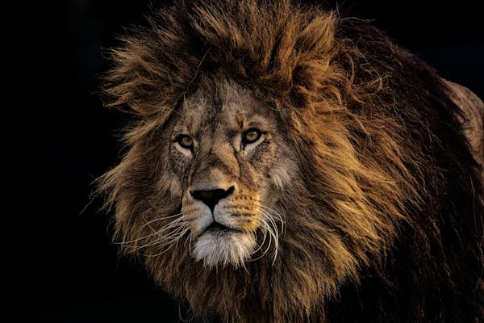
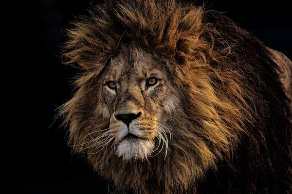
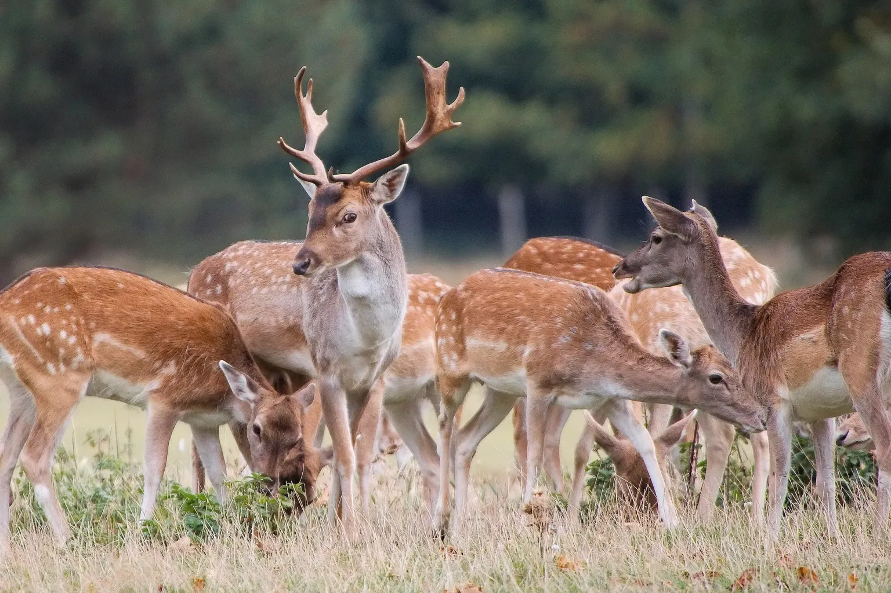
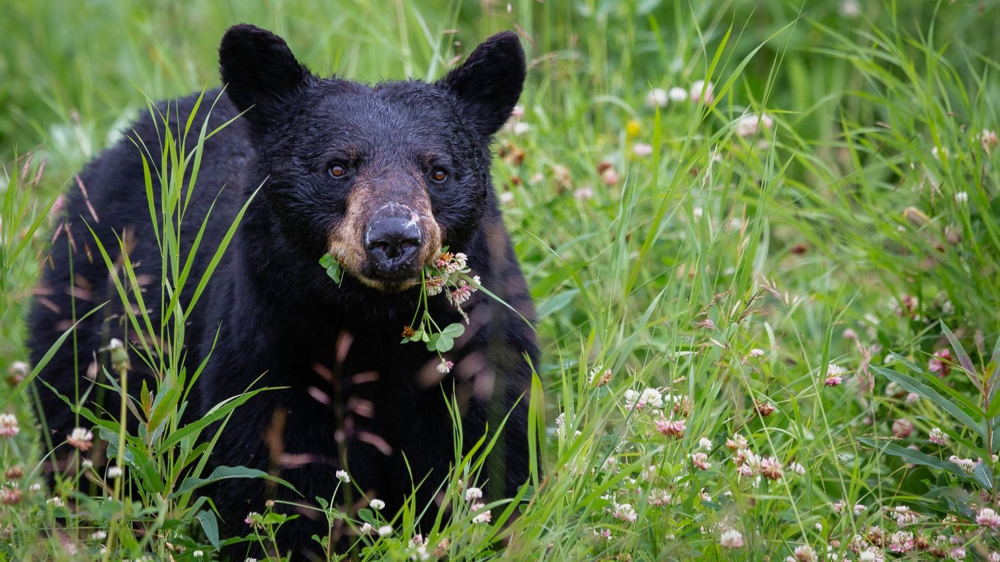
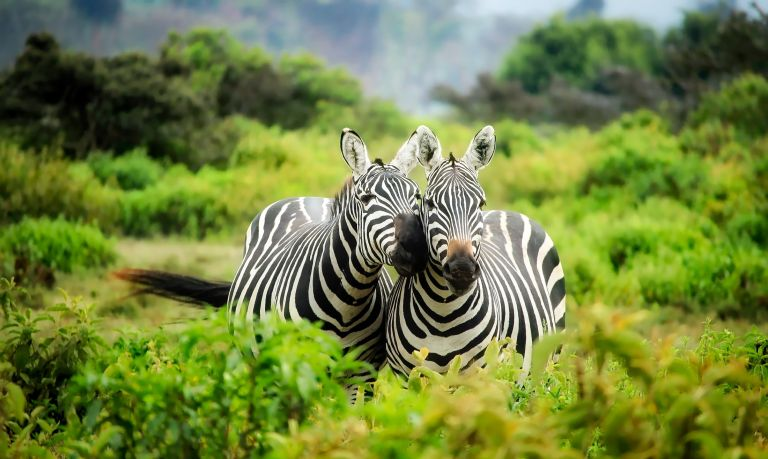
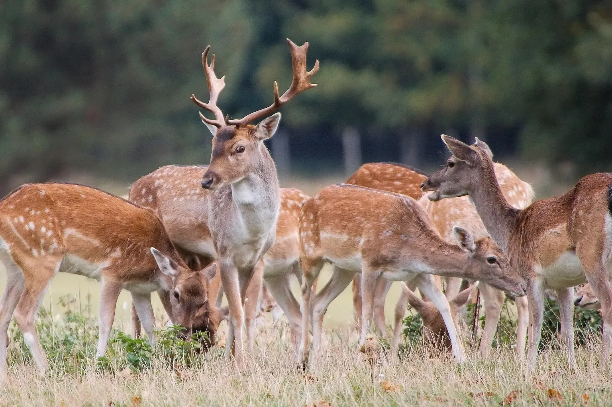
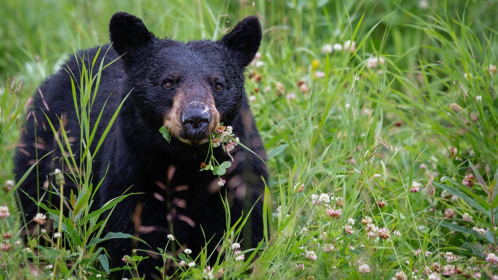
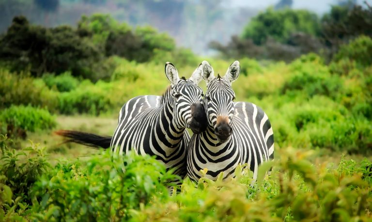

Gray Wolf (Canis Lupus): the largest wild member of the dog family. AKA: Timber wolf Kingdom: | Animalia Phylum: | Chordata Class: | Mammalia Order: | Carnivora Family: | Canidae Genus: | Canis Species: | C. Lupus
The gray wolf is a common motif in Eurasia and North America, corresponding with the wolf’s geographic location. As a predator, the wolf is strongly associated with danger and destruction. In modern society, the “Big Bad Wolf” is a common trope due to threats it poses to both humans and livestock. However, early human societies that hunted to survive admired the wolf and tried to mimic its habitat. The wolf remains an important figure in nomadic groups’ culture and religion in both Eurasia and the North American Plains, but the best known cultural contribution is that of household dogs: wolves were domesticated several thousand years ago, and selective breeding produced dogs as pets. In fables and literature, wolves have been portrayed as dangerous and deceitful. Greek Storyteller Aesop featured wolves in multiple fables, including his most famous, “The Boy Who Cried Wolf.” The phrase “to cry wolf” was derived from this fable, which is directed at those who knowingly raise false alarms. The Bible contains numerous references to wolves, where they are typically used as a metaphor for greed and destruction.
A northern male wolf is about 6.6 feet long, including the bushy tail, and it stands about 30 inches tall at the shoulder. On average, it weighs about 100 pounds, but it can range from 31 to 143 pounds. Females average about 20 percent smaller than males. The size of the wolf depends on its geographic location. The largest wolves are found in west-central Canada, Alaska, and across northern Asia. The smallest tend to be near the southern end of their distribution in the Middle East, Arabia, and India.
Fur on the upper body, though usually gray, may be brown, reddish, black, or whitish, while the underparts and legs are usually yellow-white. In the arctic region, light-colored wolves are common. The wolf has very dense and fluffy winter fur. The winter fur is highly resistant to the cold. Wolves in northern climates can rest comfortably in open areas at minus 40 degrees Fahrenheit.
Wolves are natural-born predators and are well-equipped to take down prey. They have keen senses, large canine teeth, powerful jaws and the ability to run at 37 miles per hour. Gray wolves typically hunt and move overnight, especially in area with a high human population. Their main prey are large herbivores, including deer, elk, moose, bison, bighorn sheep, caribou and musk oxen. When available, wolves will hunt beavers and hares. Canadian wolves will fish for Pacific salmon. Once they successfully make a kill, the pack will gorge and linger. They typically consume 7 to 20 pounds per an animal.
Wolves can be found from the tundra to the woods, forests, grasslands, or even deserts. Their presence is dependent largely on the availability of prey. Typically, a wolf pack’s range will be between 80 and 300 miles, depending on the number and spread of prey. In regions with extreme climate, such as the arctic, the pack’s territory can span over 1,000 square miles
The gray wolf inhabits vast areas of the Northern Hemisphere, spreading from North America to Eurasia and into the Arctic regions.
Wolves can live up to 13 years in the wild, though few survive to that age. On average, they live from 6 to 8 years.
 

 




